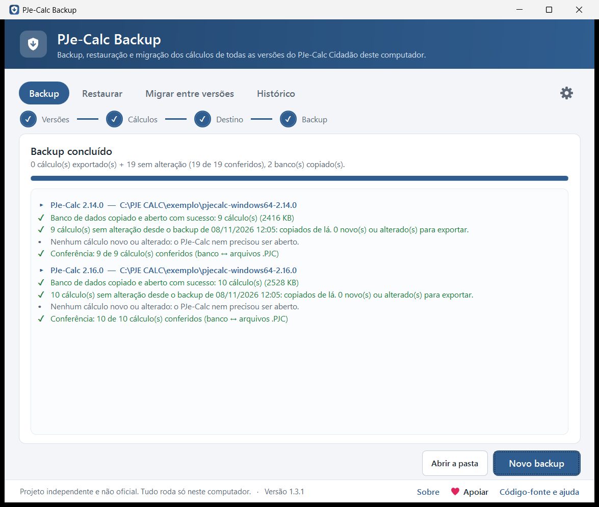

O PJe-Calc é desenvolvido pelo TRT da 8ª Região e adotado pelo CSJT em toda a Justiça do Trabalho. Este é um projeto independente e não oficial: não tem vínculo com o TRT da 8ª Região, com o CSJT ou com a equipe do PJe-Calc. As fotos desta página usam dados fictícios.
Por que existe
O PJe-Calc guarda os cálculos dentro da pasta de cada versão, e não tem backup automático.
Versão nova, cálculos para trás
Quando se instala uma versão nova do PJe-Calc em outra pasta, os cálculos antigos não vão junto.
Horas exportando um por um
A única saída era exportar e importar cálculo por cálculo pela tela. O programa faz isso sozinho e confere no final.
Numeração que pula
Do cálculo 2 para o 33, de repente. O programa faz a numeração parar de pular e coloca os cálculos em sequência.
Antes e depois
O que muda na rotina de quem usa o PJe-Calc todos os dias.
Sem o programa
- Exportar cada cálculo pela tela, um por um, em cada versão
- Lembrar de fazer backup, e torcer para não esquecer
- Versão nova do PJe-Calc começa vazia
- Importar de novo cria cálculos duplicados
- Numeração pulando do 2 para o 33
Com o PJe-Calc Backup
- Todos os cálculos de todas as versões em poucos cliques, conferidos
- Backup automático nos dias e no horário escolhidos
- Migração da versão antiga para a nova de uma vez
- Os que já existem vêm desmarcados, sem duplicar
- Numeração em sequência: 1, 2, 3…
O que ele faz
Tudo em assistentes de poucas etapas, com um aviso antes de qualquer mudança. Clique numa foto para ampliar.

Backup de todas as versões
Exporta cada cálculo em .PJC e copia o banco inteiro de cada versão do PJe-Calc instalada, sem precisar abrir o PJe-Calc para escolher.

Conferência no final
Cada arquivo gerado é aberto e comparado com o banco: "21 de 21 conferidos". A cópia do banco também é aberta, para provar que está íntegra.

Restauração sem duplicar
Traz de volta cálculos em qualquer versão e deixa desmarcados os que já existem. Ou volta o banco inteiro para o dia do backup.

Migração entre versões
Leva os cálculos da versão antiga do PJe-Calc para a nova, sem mexer na origem e sem duplicar o que já foi levado.

Numeração em ordem
Faz o PJe-Calc reservar um número por vez, para a numeração não pular, e coloca os cálculos em sequência (1, 2, 3…), com opção de desfazer.

Histórico e busca
Acha um cálculo dentro de todos os backups pelo nome da parte ou pelo processo, e restaura só ele.

Backup automático
Nos dias e no horário escolhidos, pelo Agendador do Windows. Se o computador estava desligado, roda quando ligar, e avisa se algo falhar.

Backup rápido
Só os cálculos novos ou alterados são exportados. Se nada mudou, o backup termina em segundos, sem abrir o PJe-Calc.
Como usar
O primeiro backup leva poucos cliques: o programa já vem com tudo marcado.
Baixe e abra
Baixe o
PJeCalcBackup.exee dê dois cliques. Não pede senha de administrador.Instale, se quiser
Clique em Instalar na faixa do topo para ter atalhos na Área de Trabalho e no menu Iniciar.
Faça o backup
Na aba Backup, clique em Avançar duas vezes e em Concluir. Fica na pasta
BKP PJC PJECALC, na Área de Trabalho.Deixe automático
Em ⚙ → Backup automático, escolha os dias e o horário, e não precisa mais lembrar.
Apareceu "O Windows protegeu o computador"?
É normal na primeira vez: o programa não tem assinatura digital, que é paga. Clique em Mais informações e depois em Executar assim mesmo.
O código é aberto, e os arquivos são compilados pelo próprio GitHub a partir dele. O código SHA-256 de cada arquivo aparece na página da versão.
O passo a passo de cada tela, com fotos, está no guia completo.
Seguro por padrão
O programa foi feito para nunca deixar você sem os seus cálculos.
- Nunca encerra o PJe-Calc à forçaSe ele estiver aberto, é fechado como no "Sair" do ícone perto do relógio e reaberto no final.
- Dá para desfazerAntes de restaurar, migrar ou mudar a numeração, guarda uma cópia do banco.
- Nada é apagado sem perguntarA limpeza de backups antigos mostra a lista antes e manda para a Lixeira.
- Seus dados não saem do computadorA internet só é usada para ver se há versão nova, o que dá para desligar.
Também no CMD
O programa traz junto uma versão para o terminal, com as mesmas funções em menus simples. Para quem prefere o teclado ou quer automatizar.
- backup, restauração, migração e correção da numeração;
- arrastar arquivos
.PJCsobre obackup-calculos.batpara restaurar; - modo automático para scripts e agendamentos.
PJeCalcBackup-Console.exe --backup --rapido
Perguntas frequentes
As mais comuns. Todas as outras estão nas perguntas frequentes do guia.
É de graça mesmo?
Sim, e vai continuar sendo. O código é aberto, com licença MIT. Quem quiser pode apoiar o projeto com um PIX de qualquer valor.
Em quais versões do PJe-Calc funciona?
No PJe-Calc Cidadão para Windows. Foi testado nas versões 2.14.0 e 2.16.0, e encontra sozinho todas as versões instaladas no computador. Precisa do Windows 10 ou 11 e do Microsoft Edge ou do Google Chrome, que são usados de forma invisível para exportar os cálculos.
Preciso fechar o PJe-Calc antes do backup?
Basta salvar o que estiver editando. Se o PJe-Calc estiver aberto, o programa o fecha com segurança e o reabre no final.
Como sei que o backup deu certo?
No final aparece a conferência, por exemplo "21 de 21 conferidos": cada arquivo gerado é aberto e comparado com o banco do PJe-Calc. Cada pasta de backup também tem um relatório com tudo o que foi feito.
Posso guardar os backups no OneDrive, no Google Drive ou num pendrive?
Sim. Basta escolher a pasta sincronizada ou o pendrive como pasta dos backups, nas configurações ou na etapa Destino.
Ao restaurar, o cálculo ganhou outro número. Por quê?
É o normal do PJe-Calc: cada cálculo importado vira um cálculo novo, com número novo. A aba Numeração do programa coloca os números em ordem depois.
Mudar o número dos cálculos é seguro?
Não é uma função oficial do PJe-Calc, por isso o programa guarda antes uma cópia do banco, faz tudo numa cópia, confere e só então troca. Dá para desfazer com um clique. A mudança só é liberada nas versões do PJe-Calc já conferidas.
Encontrei um problema. Como relato?
Abra uma issue no GitHub com a versão do PJe-Calc, a do programa (aparece no rodapé) e a do Windows. Nunca envie arquivos com dados das partes.
Apoie o projeto
O PJe-Calc Backup é gratuito. Se ele economizou o seu tempo, você pode apoiar com um PIX de qualquer valor, ou indicar o programa a colegas que usam o PJe-Calc.
7828ccd8-a4ad-4757-8acf-6d968c74c3a8 
Pronto para o primeiro backup?
Leva poucos minutos e os seus cálculos ficam guardados.
Baixar grátisOutros arquivos (versão para o CMD, códigos SHA-256) na página da versão.